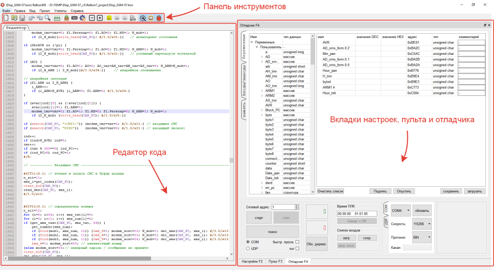

Рабочая область среды RIDE состоит из меню, панели инструментов, редактора кода, отладчика, редактора пульта, блока настроек.

В панели инструментов размещены иконки наиболее часто используемых команд. При наведении курсора мыши на иконку появляется всплывающая подсказка, описывающая назначение данной команды.
Отладчик, пульт и настройки могут отображаться или нет по желанию пользователя. По умолчанию они выводятся в правой части окна в виде вкладок. При необходимости их можно вынести в отдельное окно. Для этого нужно зацепиться и потянуть левой кнопкой мыши за заголовок вкладки (в верхней части). В дальнейшем это окно можно снова "прикрепить" к главному окну двойным щелчком мыши по заголовку. Настройка видимости отладчика, пульта и настроек задаётся через панель инструментов или через меню.